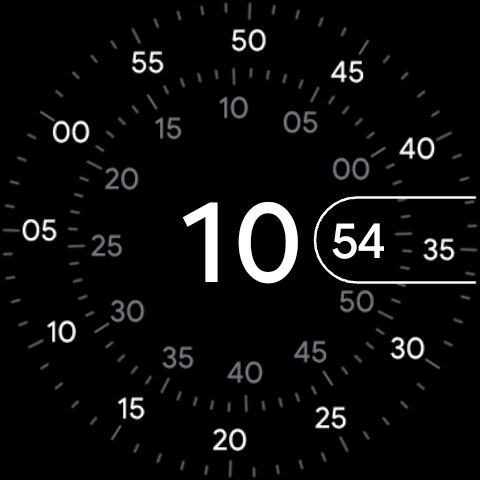

Wear OS akıllı saatleri, Android'in özelleştirilmiş bir sürümüyle çalışan güçlü mikro bilgisayarlardır. Akıllı telefonlardaki gibi Google Pixel Watch, Samsung Galaxy Watch ve diğer Wear OS cihazlarında da Geliştirici Seçenekleri adında gizli bir kontrol paneli bulunur. Normal şartlarda bu ayarlar, kullanıcıların sistem kararsızlığına yol açabilecek ayarları yanlışlıkla değiştirmesini önlemek için gizlidir. Ancak, dışarıdan uygulama yüklemek (side-load), sistem geçişlerini özelleştirmek, performans ölçümlerini izlemek veya Android Hata Ayıklama Köprüsü (ADB) aracılığıyla özel bir uygulamayı hata ayıklamak istiyorsanız, bu menünün kilidini açmak ilk adımınızdır.
Bu kapsamlı kılavuzda; Wear OS 3, Wear OS 4 ve en son Wear OS 5 sürümlerini çalıştıran Wear OS cihazlarında Geliştirici Seçeneklerini nasıl etkinleştireceğinizi, ADB hata ayıklamayı nasıl kuracağınızı ve kablosuz/Wi-Fi hata ayıklamayı nasıl yapılandıracağınızı göstereceğiz.

1. Bölüm: Wear OS'te Geliştirici Seçenekleri Nasıl Etkinleştirilir?
Geliştirici menüsünün kilidini açmak, klasik bir Android yöntemini takip eder: belirli bir bilgi bloğuna üst üste birkaç kez dokunmak. Menü yapısı, One UI Watch çalıştıran bir Samsung Galaxy Watch'a mı yoksa saf Wear OS çalıştıran bir Google Pixel Watch'a mı sahip olduğunuza bağlı olarak biraz değişir, ancak temel adımlar tamamen aynıdır.
- Fiziksel güç düğmesine basın veya uygulama çekmecesini ya da Hızlı Ayarlar'ı açmak için ana ekrandan aşağı kaydırın ve Ayarlar (dişli) simgesine dokunun.
- Ayarlar menüsünün en altına gidin ve Sistem (veya Samsung Galaxy Watch'larda Saat hakkında) seçeneğine dokunun.
- Saat hakkında seçeneğine dokunduysanız, bir sonraki adımda Yazılım bilgileri öğesine dokunmanız gerekir. Sistem öğesine dokunduysanız sonraki adıma geçin.
- Yapım numarası (veya Yazılım sürümü) etiketli girişi bulun. Bu girişe hızlıca tam yedi (7) kez dokunun.
- Ekranda "Artık bir geliştirici olmaya X adım uzaktasınız." diyen geçici bir geri sayım bildirimi göreceksiniz. Son bir mesajla "Geliştirici modu etkinleştirildi" veya "Artık bir geliştiricisiniz!" onaylanana kadar dokunmaya devam edin.
Çalıştığını doğrulamak için geri düğmesine basarak ana Ayarlar ekranına dönün. En aşağıya kaydırdığınızda, Sistem ve Saat hakkında öğelerinin hemen altında yepyeni bir menü girişi fark edeceksiniz: Geliştirici seçenekleri.
2. Bölüm: ADB ve Wi-Fi Hata Ayıklamayı Yapılandırma
Çoğu akıllı saatte fiziksel USB bağlantı noktası bulunmadığı için veya yalnızca güç aktarımını destekleyen şarj stantları kullandıkları için saatinizi bir bilgisayara bağlamanın birincil yöntemi kablosuz hata ayıklamadır. İşte nasıl yapılandırılacağı:
Ağ Gereksinimi
Kablosuz hata ayıklamanın çalışabilmesi için Wear OS akıllı saatinizin ve bilgisayarınızın tamamen aynı yerel ağa (SSID) bağlı olması gerekir. Bilgisayarınızın, yerel istemciler arası iletişimi engelleyen bir misafir ağında veya VPN'de olmadığından emin olun.
Kablosuz Hata Ayıklamayı Etkinleştirme Adımları:
- Ayarlar > Geliştirici seçenekleri bölümüne gidin.
- Aşağı kaydırın ve ADB hata ayıklama seçeneğinin yanındaki anahtarı açın. Etkinleştirmek için ekrandaki uyarıyı onaylayın.
- Biraz daha aşağı kaydırın ve Kablosuz hata ayıklama seçeneğine dokunun. (Eski Wear OS sürümlerinde bu seçenek Wi-Fi üzerinden hata ayıklama olarak adlandırılabilir).
- Kablosuz hata ayıklama anahtarını "Açık" konumuna getirin.
- Cihazın Wi-Fi ağınıza bağlanması ve IP adresini alması için bir süre bekleyin. Bağlandıktan sonra ekranda bir IP adresi ve bağlantı noktası numarası görüntülenecektir (örneğin,
192.168.1.15:5555). Bunu not edin.
3. Bölüm: Bilgisayarınızda ADB ile Bağlanma
Saatiniz bir hata ayıklama bağlantı noktası yayınladığına göre, standart Android SDK platform araçlarını (ADB) kullanarak bilgisayarınızı saate bağlayabilirsiniz.
Bilgisayarınızda bir komut istemi, terminal veya PowerShell penceresi açın ve aşağıdaki komutları çalıştırın:
Wear OS 4 ve Wear OS 5 İçin (Eşleştirme Gerektirir):
Modern Wear OS sistemleri güvenli kablosuz eşleştirme kullanır. Saatinizdeki "Kablosuz hata ayıklama" ayarları altında Yeni cihaz eşleştir seçeneğine dokunun. Bu, bir eşleştirme kodu, bir IP adresi ve bir bağlantı noktası görüntüleyecektir. Bilgisayarınızda aşağıdaki komutu çalıştırın:
adb pair [IP_ADRESİ]:[ESLESTİRME_PORTU]Örnek: adb pair 192.168.1.15:43215
İstendiğinde saat ekranınızda görüntülenen 6 haneli eşleştirme kodunu girin. Eşleştirildikten sonra, ana Kablosuz Hata Ayıklama ekranında gösterilen birincil IP adresini ve bağlantı noktasını kullanarak bağlantı komutunu çalıştırın:
adb connect [IP_ADRESİ]:[BAGLANTI_PORTU]Örnek: adb connect 192.168.1.15:5555
Wear OS 3 ve Daha Eski Sürümler İçin (Eşleştirme Kodu Gerekmez):
Eşleştirme kodu gerektirmeyen eski bir sistem kullanıyorsanız doğrudan bağlanabilirsiniz:
adb connect [IP_ADRESİ]:5555Saat ekranınıza bakın; "Hata ayıklamaya izin verilsin mi?" sorusunu içeren bir uyarı alacaksınız. "Bu bilgisayardan her zaman izin ver" kutusunu işaretleyin ve bağlantıyı yetkilendirmek için onay işaretine dokunun.
| İşletim Sistemi Sürümü | Hata Ayıklama Bağlantı Modu | Güvenlik Seviyesi |
|---|---|---|
| Wear OS 3 ve Altı | Doğrudan IP Bağlantısı (Port 5555) | Temel ekrandan onay yetkilendirmesi |
| Wear OS 4 / 5 (One UI 5 / 6) | Güvenli ADB Eşleştirmesi (Dinamik Port) | 6 haneli eşleştirme PIN'i + şifreleme |
Geliştirici Seçeneklerini Kullanmak İçin İpuçları
- Sistem Animasyonlarını Hızlandırın: Saatinizde hafif bir gecikme hissediyorsanız, Geliştirici Seçenekleri'nde çizim bölümüne gidin. Pencere animasyon ölçeği, Geçiş animasyon ölçeği ve Animatör süre ölçeği değerlerini
1.0xyerine0.5x(veya kapalı) olarak değiştirin. Saatiniz anında çok daha akıcı hissettirecektir. - Kullanımdan Sonra Hata Ayıklamayı Kapatın: ADB hata ayıklama ve Wi-Fi hata ayıklama özelliklerinin açık bırakılması, saatin Wi-Fi kartını aktif tutmasını ve dinleme betikleri çalıştırmasını gerektirdiğinden ciddi pil tüketimine neden olur. Testlerinizi veya uygulama yüklemenizi bitirir bitirmez Geliştirici Seçenekleri'nden her iki özelliği de kapatmayı unutmayın.
Geliştirici Seçeneklerinin kilidini açmak, Wear OS akıllı saatiniz üzerinde tam kontrol sağlar. İster özel APK'ları test etmek, ister animasyon profillerinde ince ayarlar yapmak, ister bellek tüketimini izlemek isteyin, artık bunu güvenli ve verimli bir şekilde yapacak araçlara sahipsiniz.